Our Farm and Activities
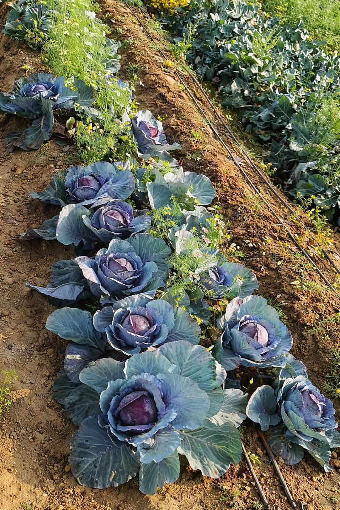
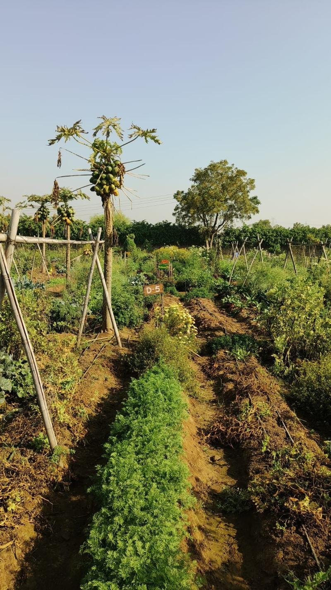
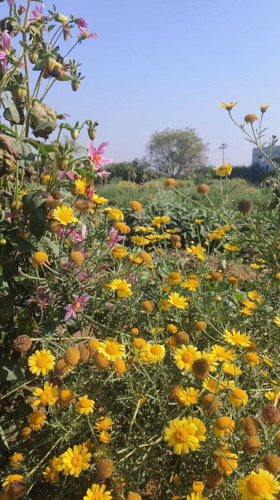
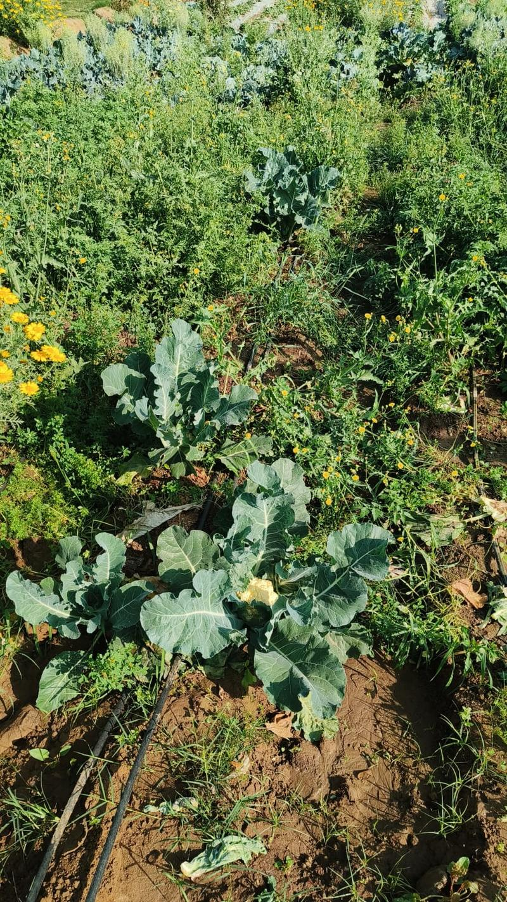
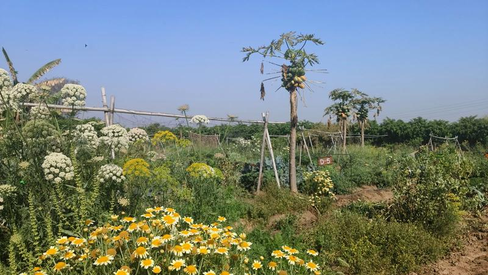
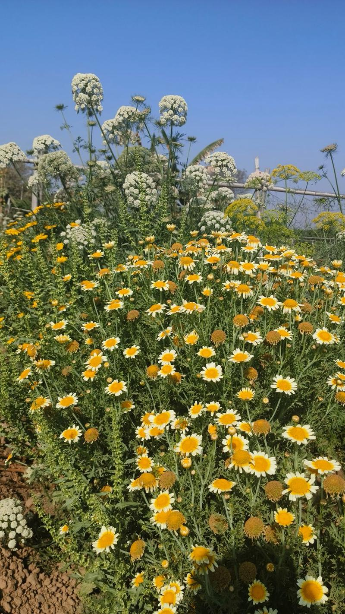
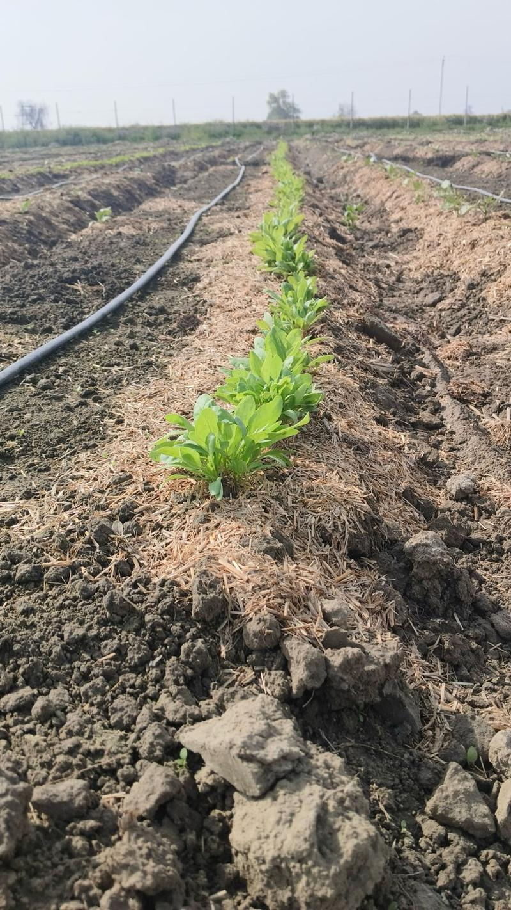


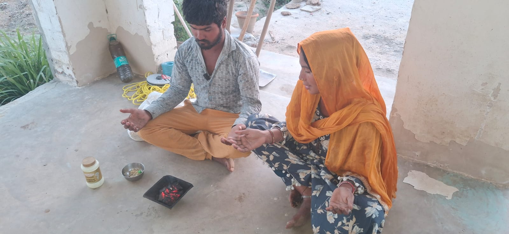
Your grandparents might have. When food made you feel STRONG - not just FULL. That food came from SOIL that was ALIVE.
Now think about what you ate today. Do you know which soil it came from? How many days in cold storage - waxed, treated, made to look fresh?
We have confused shine with health.
Today vegetables look perfect. A full plate which feels like nourishment. Yet they are delivering slow poison to our families bodies with every bite.
The average Indian vegetable today travels through cold storage, ripening chambers, and chemical wax before it reaches your hand. The pesticide residue on what you call "fresh vegetables" would fail safety standards in many countries.
This is not fear-mongering. This is what happens when a generation decided that cheap and convenient was the same as good.
The most dangerous thing? It looks completely normal.
What grows in dead soil is not food — it is the shape of food. It looks right. It weighs right. But the nutrition is gone. And what we lose in the soil, we pay for in our bodies.
They seep into groundwater. They rise as vapour. They travel into the air we breathe and the water we drink. Our bodies are keeping score.
Children developing allergies and hormonal conditions that didn't exist a generation ago. We call it lifestyle disease. But the lifestyle hasn't changed that much. The food has.
YATHA ANNA, THATHA MANN - AS IS THE FOOD, SO IS THE MIND
Food is not just what we eat - it is the balance between all five elements. When Prithvi, Jal, Agni, Vayu, and Akasha are in harmony, that is what nature is truly about.
Our ancestors farmed in conversation with nature - not in combat with it. The result was food that healed. Soil that grew richer every season.
Seeds preserved across generations - carrying the memory of thousands of seasons. We grow only what the land already knows.
Only gomutra and compost - nothing else. The desi cow is the foundation of everything we grow. No synthetic fertilizer. Ever.
We use repellents to manage pests - not kill them. Every creature has its role in the balance we are trying to restore.
Nothing forced. Nothing artificial. We grow with the season - because that is when the food is most alive.
When Prithvi, Jal, Agni, Vayu, and Akasha are in harmony - the soil lives. When the soil lives, the food heals. When the food heals, so do we.
Natural farming teaches that health is not a product to be purchased. It flows naturally when all five elements are in balance.
Aarogya Bhoomi is our attempt to restore that balance - one farm at a time.
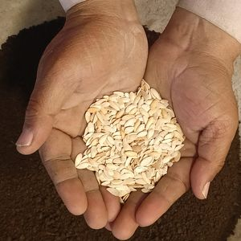
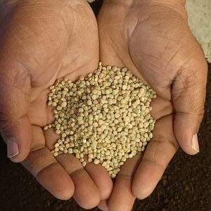
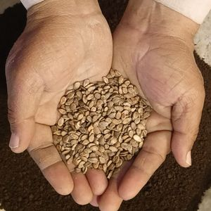
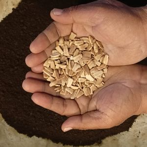
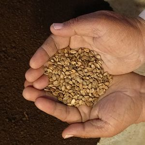
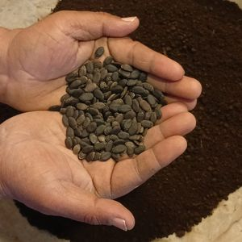
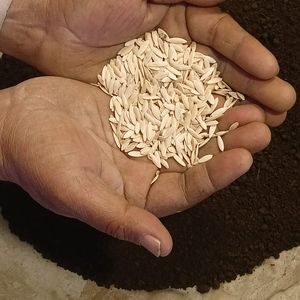
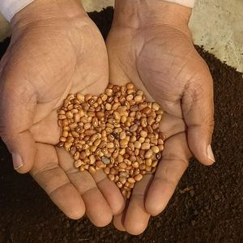
We are attempting to preserve and grow over 500+ indigenous varieties of veggies, fruits, herbs and spices.
Think about the person who grew what you ate today. He was in the field before the sun rose. He watched the sky nervously when the monsoon was late. He took loans to buy seeds - more loans when the harvest didn't cover the last ones.
And at the end of all that - he got paid less than what it cost him to grow.
What if the people who eat the food also shared the responsibility of growing it? Not as charity. Not as sympathy. As equals.
You share the real cost of growing honest food - directly, with no middleman, no markup. We farm with full natural practices. Every week, fresh harvest reaches your home. Come to the farm. Watch seeds go into the ground. Harvest with your hands. Let your children touch the soil.
When the harvest is good, we celebrate together. When it isn't - we bear the loss together.








What you're actually bringing home.
| WHAT YOU'RE COMPARING | 🛒 MARKET VEGETABLES | 🌿 AAROGYA BHOOMI |
|---|---|---|
| PURPOSE OF GROWING | Speed & quantity | Nutrition & taste |
| INPUTS USED | Chemical fertilizers & pesticides - many banned in Europe | 100% natural - desi cow gomutra with bio formulations only |
| HOW IT REACHES YOU | Cold storage, ripening chambers, chemical wax coating | Harvested and delivered - no storage, no treatment |
| AVAILABILITY | Same vegetables all year (forced, artificial) | Seasonal only - naturally grown |
| YOUR RELATIONSHIP | Anonymous. You don't know the soil or the farmer. | You know the farmer. You visit the farm. You trust what you eat. |
| WHAT YOUR CHILD EATS | Pesticide residues accumulating in small bodies | Clean, seasonal, alive - the way a child's body was designed |
| WHO BEARS FARMING RISK | Farmer alone, under crushing debt pressure | Shared between co-farmers and the farm |
| WHAT YOU'RE REALLY PAYING FOR | The appearance of freshness | Real food, honest farming, a future your children can eat from |
Most farmers don't grow food naturally-not because they don't want to, but because they can't afford the risk. Natural farming requires time, patience, and most importantly - a guaranteed buyer for the season.
Without that assurance, farmers are forced to depend on chemicals for faster, predictable yields.
At Aarogya Bhoomi, we change that. By committing to a season, you enable farmers to grow food the right way - slow, diverse, and chemical-free.
You don't just receive vegetables. You witness your food growing, understand the process, and become a co-farmer in the journey.
Backed by 50+ natural farming SOPs, this is food you can trust - because you've seen it grow.
"My daughter actually asks for vegetables now. She visited the farm once and now tells her friends she has her own carrot plant."
Priya Sharma
Co-Farmer, Gurgaon · 8 months
"After years of knowing our food was wrong but not knowing what to do - this felt like finally doing something. The tomatoes alone changed my mind about everything."
Rohit & Kavya Mehta
Co-Farmers, Noida · 1 year
"My 7-year-old harvested spinach with his own hands. He ate every leaf without complaint. That has never happened before."
Ananya Krishnan
Co-Farmer, Delhi · 5 months
If you're the sensitive one - the one who actually wants to do something - this is your invitation. Join families who chose responsibility over complaint.
COMPARE PLANSTake the first step toward real food, living soil, and a farm that belongs to your family. Fill in our form and we'll get back to you within 24 hours.
CLICK TO FILL THE FORM →No shortcuts. No storage. No pretending. Just the honest journey from seed to plate.
Indigenous, open-pollinated seeds chosen for nutrition and flavour, not appearance.
Gomutra, compost, and deep care. We feed the soil - not the plant. Living soil does the rest.
Grown slowly with the season. Pest management, not killing. Every creature plays its role.
Harvested and delivered - no cold storage, no wax, no ripening chambers.
From living soil to healthy food - naturally.
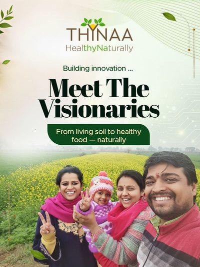
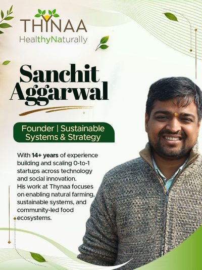
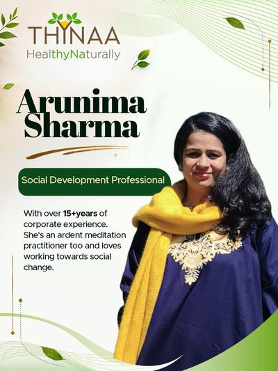
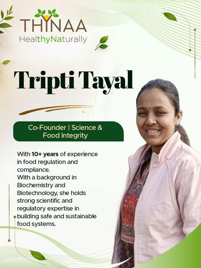
Join our WhatsApp community for weekly farm updates, seasonal recipes, and real conversations about food and soil. Watch us grow on YouTube. Follow the daily life of the farm on Instagram.
A practical recipe book to help you create simple, nutritious, and delicious meals - even if you’re just starting out in the kitchen. Learn easy cooking techniques, ingredient selection, and natural, wholesome recipes you can try this weekend.